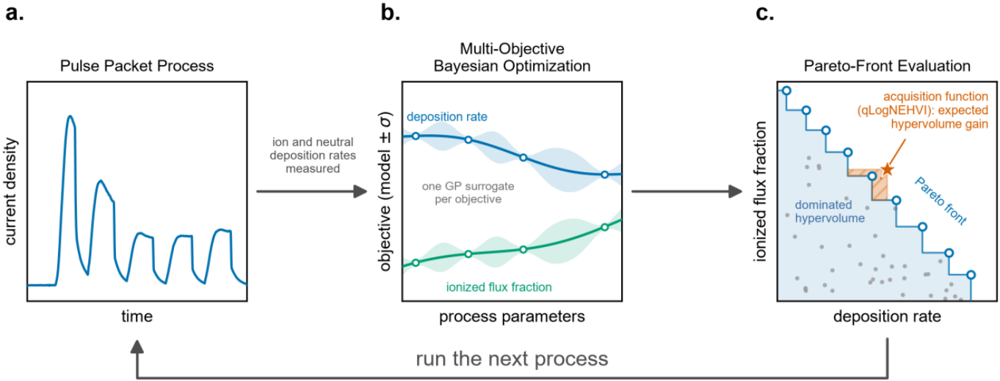
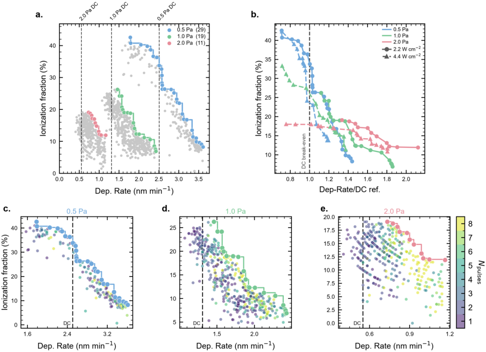
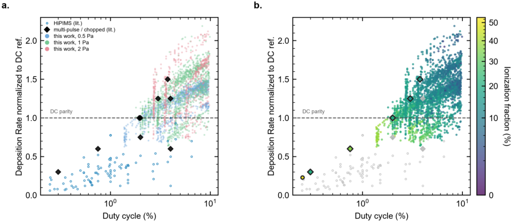
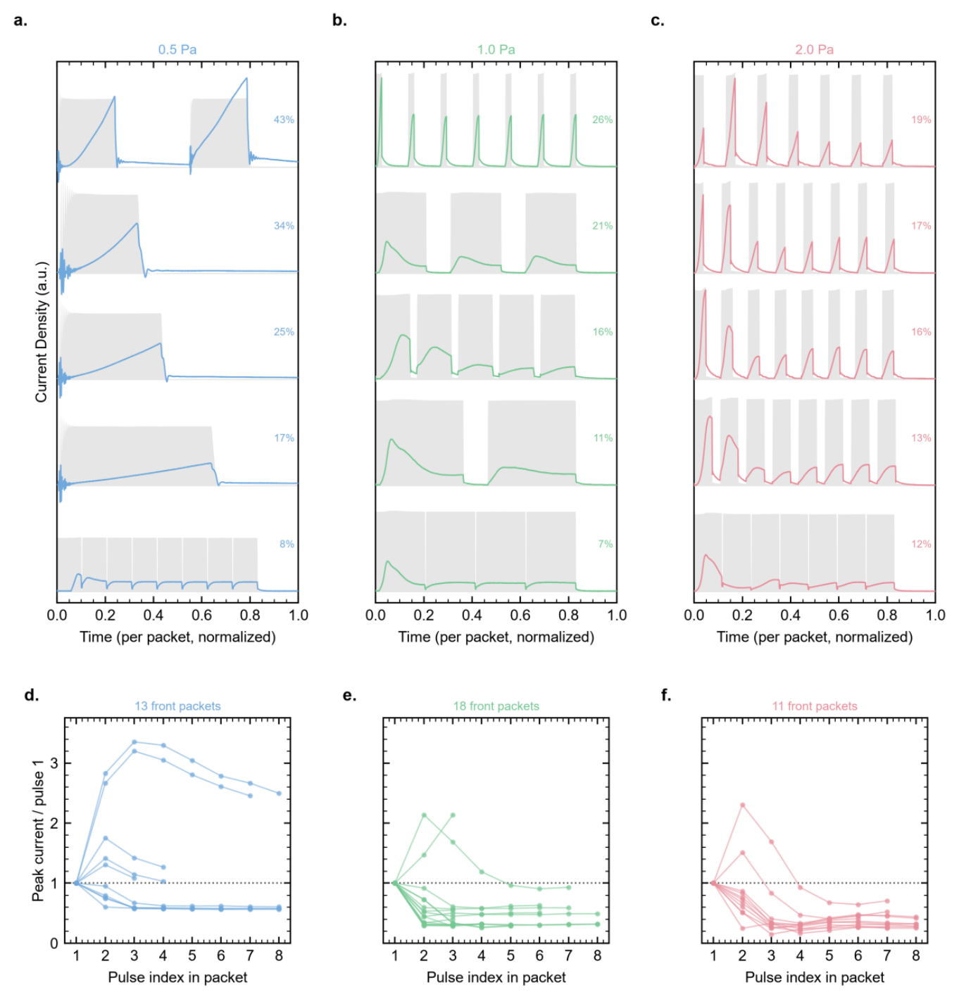
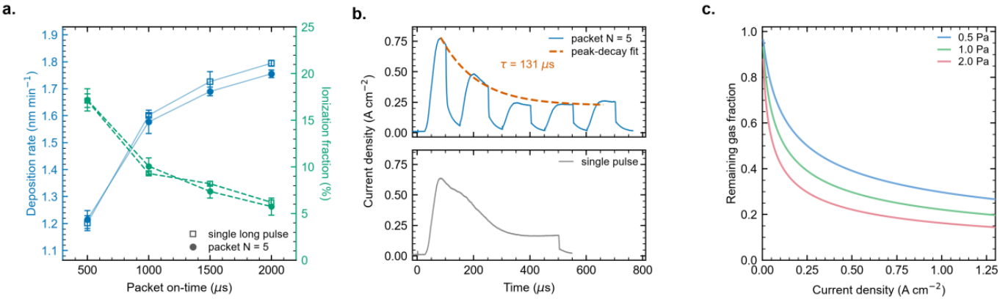
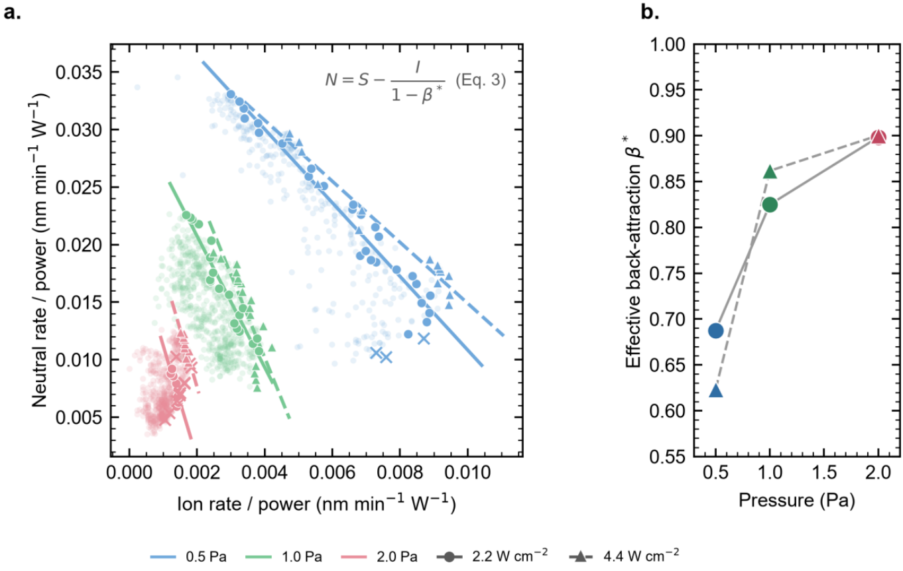
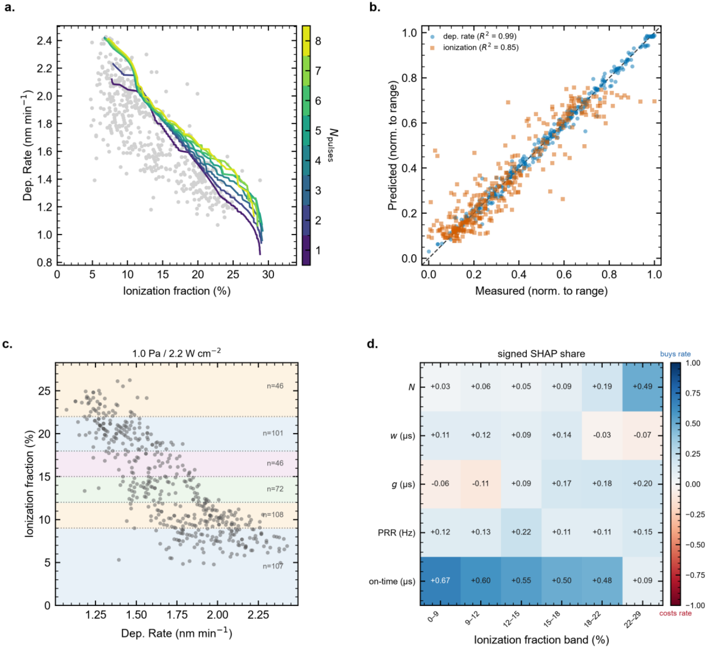

HiPIMS 不一定牺牲沉积速度：多目标贝叶斯优化怎样找到超过直流溅射的工艺
论文原文 ↗论文：Nathan Rodkey、Felix Thelen、Alfred Ludwig、Sebastian Siol，Multi-objective Bayesian optimization reveals HiPIMS deposition rates exceeding direct current sputtering，arXiv:2610.35535，2026。官方页面 ·
溅射镀膜用离子轰击靶材，把靶原子打出并输送到基底。高功率脉冲磁控溅射（HiPIMS）把能量集中在短脉冲里，产生高密度等离子体，让更多溅射粒子成为离子。带电粒子能用基底偏压控制入射能量，这对致密镀层、附着力和复杂表面覆盖很有吸引力。
长期存在的取舍是：靶材带很高的负电压，也会把刚生成的正离子吸回去。于是 HiPIMS 常被认为要以更慢的沉积换取更多离子辅助。近年来，把一个长脉冲切成多个短脉冲的“脉冲包”成为改善速率的办法，却又增加了工艺参数组合。
这篇论文将沉积速率与到达端的离化通量分数同时作为优化目标，在真实 Ti 溅射装置中闭环探索超过 2,000 种工艺。最值得关注的发现是：不少工艺连同简单单脉冲，都能在相同平均功率和压力下超过直流溅射（DC）速率。对于 1.0 Pa、约 5%—20% 的适中离子分数，关键更接近“强起始峰加毫秒级低平台长脉冲”，而不是不断把脉冲切碎。
一、一个工艺输入究竟是什么，两个输出又怎样测
论文主要搜索对称脉冲包：一个包内有 N 个相同宽度的脉冲，相邻脉冲之间有相同的关断间隔，整个脉冲包再周期性重复。控制量包括：
- 脉冲数 N：1—8；N=1 就是单脉冲。
- 每个脉冲宽度 w：10—500 μs。
- 包内关断间隔 g：10—100 μs。
- 脉冲包重复频率：50—2,000 Hz。
总导通时间为 N×w，占空比则表示单位时间里有多少比例处于通电状态。改变脉冲数会同时改变总导通时间，因此看到“更多脉冲更好”，还要进一步区分它来自切分本身，还是仅仅来自更长通电。
作者固定各轮实验的平均功率，分别研究 0.5、1.0、2.0 Pa 工作压力，以及 2.2、4.4 W cm⁻² 平均靶功率密度。装置使用直径 3 英寸的 Ti 靶，测量位置位于靶轴线上、工作距离 12 cm，氩流量为 50 sccm。每组压力与功率都测相应 DC 参考，确保速率比对应同一平均功率和压力。
测量用的是改装的石英晶体微天平（QCM）：沉积质量变化引起晶体振动频率变化，据此得到沉积速率。探头接地时，离子与中性粒子都能沉积；前表面施加 +30 V 时，正离子被排斥，测到主要由中性粒子形成的沉积。两种状态的差异给出离子贡献，再除以总沉积通量，得到离化通量分数。因此优化器每次收到的两个数，来自同一工艺的实际通量测量。
二、贝叶斯优化怎样决定下一次开机参数

图1｜工艺执行与测量→两个高斯过程代理→Pareto 前沿与采集函数→下一组工艺参数。
每轮先随机做 10 个工艺，随后分别训练两个高斯过程代理模型，一个预测沉积速率，一个预测离子分数。高斯过程不仅给出均值，也给出对未测位置的不确定程度，让算法能同时考虑“看起来很好”和“还不清楚但可能有价值”的配方。
两个目标不被压成一个固定权重分数。优化器寻找的是 Pareto 前沿：在这组候选中，想进一步提高一个目标，就要损失另一个目标；其余同时在两项上都更差的点不构成前沿。这样可以为需要较高离子分数或较快镀膜的不同应用保留多种选择。
实际推荐使用 qLogNEHVI 采集函数，即考虑测量噪声的预期超体积改进。这里的“超体积”可以直接理解为二维目标图上，当前前沿相对参考点覆盖的优良区域面积。算法综合预测与不确定性，选择最有希望扩大这片区域的下一组脉冲参数，控制装置运行，测量两个输出，再把结果加入数据重新拟合。它形成的是由真实实验结果不断更新的参数搜索闭环。
最终前沿工艺在每轮结束时重复测量三次，以沉积和离子测量的相对标准差低于 2.5% 为筛选条件；实验中还每隔 20 次插入相同参考工艺，跟踪设备与靶状态的漂移。这使主要速率比较落在重复实验支持的工艺点上。
三、发现一：高离化与低速率之间，有一大片过去少探索的工艺区域

图2｜不同压力与功率下的沉积—离子双目标前沿。b 将速率除以相同压力和功率下的 DC 速率，横坐标超过 1 即超过 DC；c—e 用颜色显示脉冲数。
在 2.2 W cm⁻² 的三组压力实验中，相当一部分前沿点位于 DC 速率右侧。把六组实验都除以各自的 DC 参考后，大多数优化前沿仍超过 1；在该功率密度下，离子分数提高到约 35% 以上时，DC 才开始超过 HiPIMS 的速率。这把“脉冲一定更慢”改写为一个具体的工艺选择问题：适中离子分数下，可以同时获得离子辅助和更快输运。

图3｜纵轴为相对 DC 的沉积速率，横轴为占空比；本研究覆盖了传统低占空比 HiPIMS 与高占空比脉冲 DC 之间的区域。
与文献整理相比，传统单脉冲 HiPIMS 多集中在低于约 5% 的占空比，速率常落在 DC 的一小部分；本研究的优化工艺在最高约 10% 占空比下，达到相应 DC 参考的 1.5—2.2 倍。这一发现与主动搜索范围有关：作者没有只沿几条熟悉工艺逐个改参数，而是系统探索了更宽的时间结构，绘出速度与离子分数的边界。
压力也改变可达范围。低压力下散射较少，绝对沉积速率更高，可达到的离子分数也更大；高压力虽然绝对速率下降，相对其 DC 参考的提升仍可很明显。因此图2中的“绝对最快”和“相对 DC 提升最大”分别回答了不同问题。
四、发现二：增加脉冲数的收益，常常来自延长总通电时间

图4｜三种压力下的代表性前沿电流波形。灰色为通电区间；同一压力列从低离子分数向高离子分数排列，底部比较后续脉冲相对首脉冲的电流峰值。
在低离子分数一侧，前沿常表现为较长、较平缓的通电过程；在较高离子分数一侧，则更接近短而强的电流脉冲。在较高压力下，脉冲包常由首个强峰启动，后续脉冲的电流峰迅速减弱，并进入较低平台。
作者因此追问：算法找到的是“切分脉冲”的优势，还是“保持更长通电”的优势？他们额外做了 204 种工艺比较，把脉冲包与总导通时间相同的单脉冲成对测量。图5中的五脉冲包与单脉冲，在沉积速率及离子分数上几乎一致。脉冲包并没有因为多了几个关断间隔，就自动赢过长单脉冲。

图5｜a 比较相同导通时间的单脉冲和五脉冲包；b 显示首峰后的电流衰减；c 为气体稀薄化模型计算的剩余气体分数。
作者提出的解释是气体稀薄化。强放电会把靶前的氩气加热、排开，降低局部气体密度。首个强峰负责打开这条较低碰撞的通道，后续溅射通量则沿它输运。示例中电流峰包络的衰减时间常数约为 131 μs；包内 10—100 μs 的关断间隔，比气体充分回填所需的时间短，所以关断后通道仍然存在。连续长脉冲也能维持类似过程。
沿着这项假说，设计原则就变得具体：**先用足够高的起始峰驱动稀薄化，再把主要能量交给较低电流的长尾，让离子和中性粒子穿过已打开的通道。**这也是为什么 1.0 Pa、约 5%—20% 离子分数下，毫秒尺度通电更有利。

图6｜按功率归一化后，离子与中性粒子沉积前沿近似线性；右侧显示由简化通量关系拟合的有效回吸随压力增加。
进一步把离子和中性粒子的沉积分别除以功率，不同功率下的前沿近似落到相同压力对应的直线上。作者用一个简化通量模型描述这条线：产生离子会减少中性通量，离子又有一部分被靶回吸。线斜率对应一个有效回吸参数；在 2.2 W cm⁻² 下，0.5、1.0、2.0 Pa 对应拟合值约为 0.69、0.82、0.90。压力升高时碰撞增多，靶附近发生散射的离子更容易返回靶，这与压力支配输运边界的解释相符。气体稀薄化在这里是作者结合波形、对照实验和模型提出的物理解释。
五、从优化结果提炼出可用的工艺选择

图7｜a 为不同脉冲数的模型前沿，b 为代理预测与测量比较，c—d 在不同离子分数区间分析参数与沉积速率的关联。
作者又在 1.0 Pa、2.2 W cm⁻² 下做一轮偏向探索未知区域的实验，建立覆盖更完整的工艺图。高斯过程在分组五折交叉验证中，对沉积速率与离子分数分别得到 R²=0.99 和 0.85。随后以不同离子分数分区训练梯度提升模型，用 SHAP 分析各参数在相应区间中的归因。
得到的主要趋势是：**低离子分数时，总导通时间最重要；到约 22% 以上，脉冲数的作用才明显增强。**例如最低离子区间中，总导通时间占归因绝对值总和的约 67%。这些归因帮助解释参数作用方向；实际的等导通时间对照，则把“多脉冲”与“长通电”两个因素进一步分开。
因此，优化结果没有停在一张最佳参数表，而是给出分区设计思路：适中离子分数下优先延长通电、调整重复频率，形成强起始与低平台长尾；需要更高离子分数时，多脉冲与更短子脉冲仍有价值。不同压力对应不同可达边界，可以先根据应用需要选择离子范围，再沿前沿决定沉积速度。
对 AI for Materials 而言，这项工作的价值是：多目标学习与自动化实验共同打开了一个以往稀疏探索的工艺区域，并把意外发现转化为可解释的物理设计原则。它优化的是速度与到达端离子分数这一对可实时测量指标，最终发现连简单单脉冲都可能超过 DC，为薄膜工艺开发提供了新的参数选择空间。
原始摘要完整中文翻译
从硬质涂层到微电子，脉冲溅射工艺对众多应用都十分重要。高功率脉冲磁控溅射（HiPIMS）因具有较高的离化通量分数，为工艺设计提供了独特可能。其涉及很高的峰值电流密度，相应的高等离子体密度会产生大量离子，从而能够通过施加加速偏压调节动能。然而，一些 HiPIMS 工艺的沉积速率较低，因为这些离子会受到带负电的溅射靶的回吸。近期 HiPIMS 研究针对这一问题，探索了双极、多脉冲或斩波 HiPIMS 等复杂脉冲方案。这些方案又引入了另一个问题：工艺复杂性。因此，即使采用较粗参数间隔，工艺空间也会迅速膨胀到 10⁵—10²⁰ 种可能组合。这需要高效、智能的采样，而贝叶斯优化等机器学习算法能够实现这一点。在本研究中，我们采用多目标贝叶斯优化（MOBO），以较高离化通量分数和沉积速率为目标，高效采样脉冲包工艺空间。探索中采样了超过 2,000 种不同工艺。令人意外的是，我们发现许多 HiPIMS 工艺，包括单脉冲工艺，都能够达到高于 DC 参考的沉积速率。事实上，在 1.0 Pa 工作压力及 5%—20% 的适中离子分数下，我们发现毫秒尺度脉冲最为理想。我们假设这些工艺使气体稀薄化达到最大程度，在靶与基底之间形成低碰撞通道。这些结果展现了此前未报道的脉冲溅射行为，并挑战了薄膜制造中长期存在的薄膜质量与速度之间的权衡。